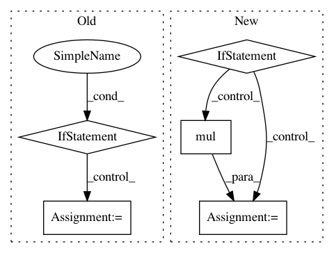

9233f51a05def9f3b2106231f7089295fb205ddc,gpytorch/variational/whitened_variational_strategy.py,WhitenedVariationalStrategy,forward,#WhitenedVariationalStrategy#Any#,67
Before Change
)
interp_data_data_var = interp_data_data_var_plus_mean_diff_inv_quad[..., :-1]
mean_diff_inv_quad = interp_data_data_var_plus_mean_diff_inv_quad[..., -1]
elif beta_features.diagonal_correction.on():
interp_data_data_var = induc_induc_covar.inv_quad(induc_data_covar, reduce_inv_quad=False)
// Compute predictive mean
predictive_mean = torch.add(
test_mean,
After Change
induc_data_covar.transpose(-1, -2), predictive_covar @ induc_data_covar
)
if self.training:
data_covariance = DiagLazyTensor((data_data_covar.diag() - interp_data_data_var).clamp(0, math.inf))
else:
neg_induc_data_data_covar = induc_induc_covar.inv_matmul(
induc_data_covar, left_tensor=induc_data_covar.transpose(-1, -2).mul(-1)
)
data_covariance = data_data_covar + neg_induc_data_data_covar
predictive_covar = PsdSumLazyTensor(predictive_covar, data_covariance)
// Save the logdet, mean_diff_inv_quad, prior distribution for the ELBO
if self.training:
In pattern: SUPERPATTERN
Frequency: 4
Non-data size: 5
Instances
Project Name: cornellius-gp/gpytorch
Commit Name: 9233f51a05def9f3b2106231f7089295fb205ddc
Time: 2019-04-15
Author: gpleiss@gmail.com
File Name: gpytorch/variational/whitened_variational_strategy.py
Class Name: WhitenedVariationalStrategy
Method Name: forward
Project Name: cornellius-gp/gpytorch
Commit Name: 44826d877d755e7df1d681d680583911d6d2032e
Time: 2019-04-15
Author: balandat@fb.com
File Name: gpytorch/variational/whitened_variational_strategy.py
Class Name: WhitenedVariationalStrategy
Method Name: forward
Project Name: dask/dask-ml
Commit Name: 233f859f7218e31357d05aa8c3752dc552197130
Time: 2017-10-30
Author: TomAugspurger@users.noreply.github.com
File Name: dask_ml/preprocessing/data.py
Class Name: MinMaxScaler
Method Name: transform
Project Name: Microsoft/nni
Commit Name: 2de52a8976971da4836727ba9242fedcc7474878
Time: 2020-01-16
Author: 656569648@qq.com
File Name: src/sdk/pynni/nni/compression/torch/compressor.py
Class Name: Pruner
Method Name: export_model